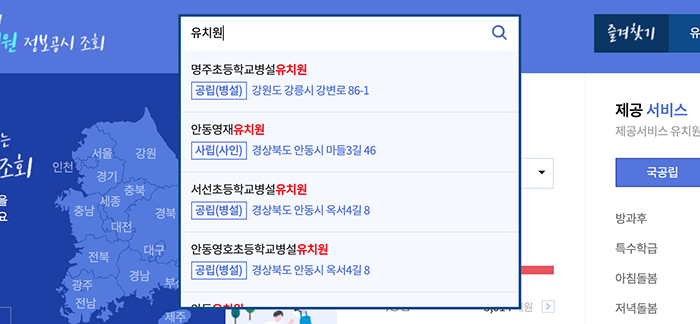
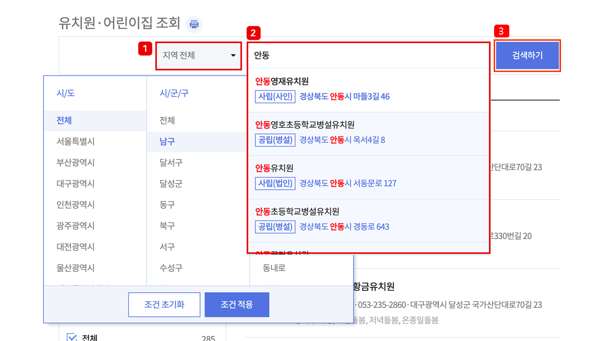
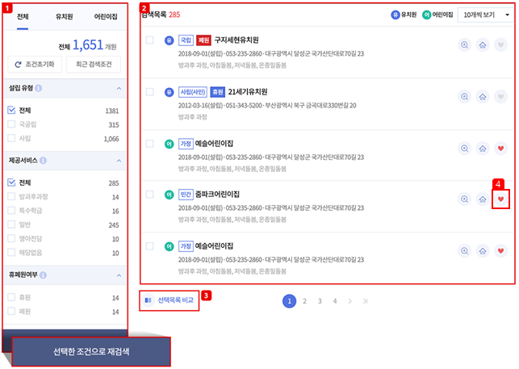
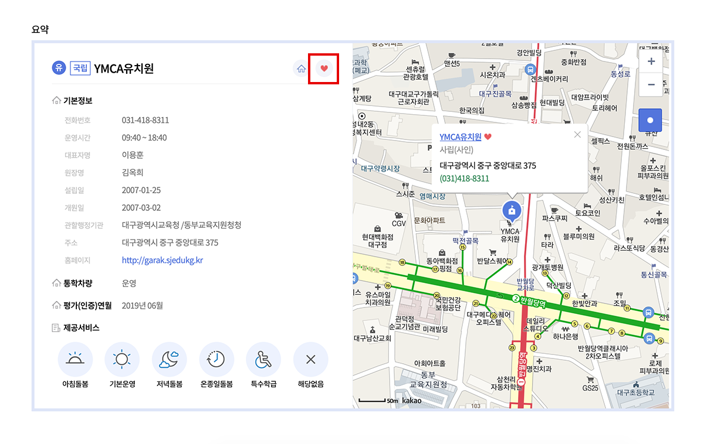
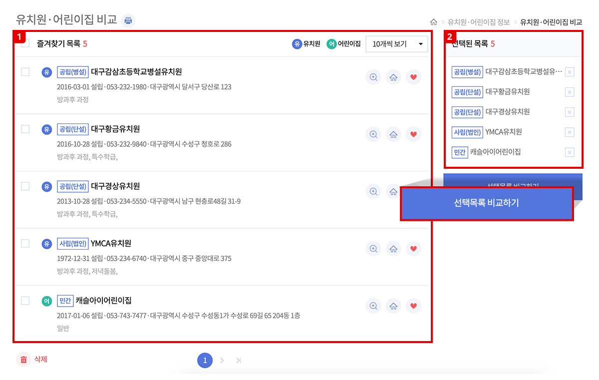
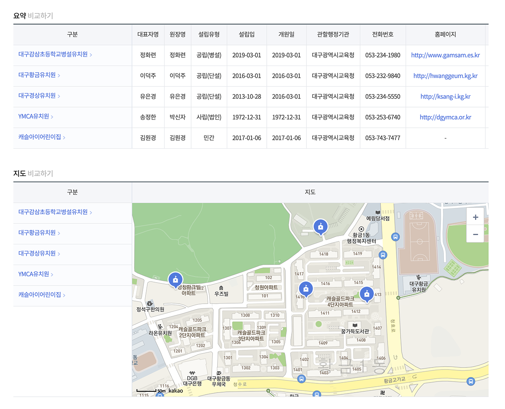
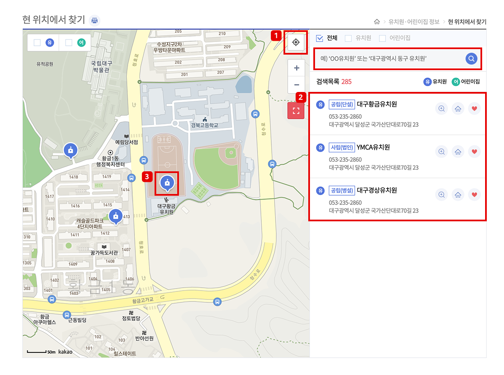
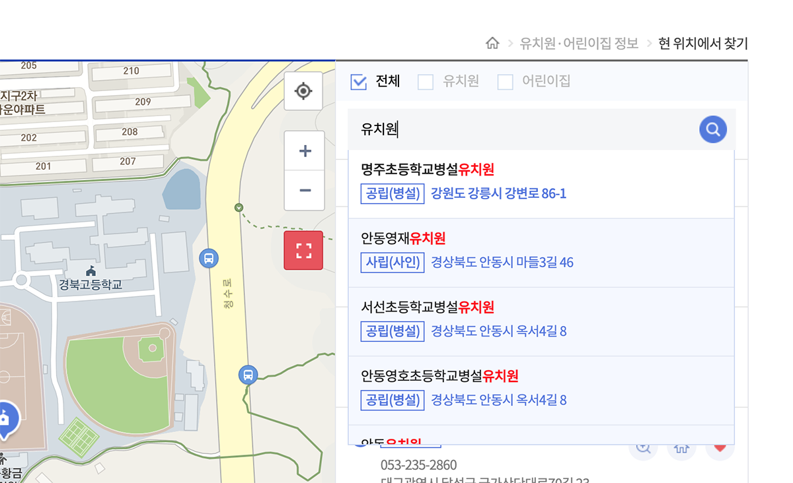

간단한 키워드를 통한 자동완성기능
지역명이나 유치원명을 활용한 간편검색
-
유치원명 결과 : 키워드가 포함된 유치원·어린이집 리스트를 제공합니다.
-
주소명 : 해당 지역 유치원·어린이집의 정보를 바로 조회할 수 있습니다.
-
주소,유치원명 키워드 검색 : 키워드가 포함된 모든 유치원·어린이집 리스트를 제공합니다.

나에게 필요한 유치원을 찾고 싶다면
한눈에 보이는 유형별 조건검색
-
1. 원하는 지역을 선택할 수 있습니다.
- 2. 유치원·어린이집명을 입력합니다.
- 3. 검색하기 버튼을 눌러 원하는 지역의 유치원·어린이집을 검색합니다.

선택과 결과를 한눈에
유치원·어린이집 통합검색
-
1. 기관, 설립유형, 제공서비스 등을 선택하고 선택한 조건으로 재검색 버튼을 클릭합니다.
-
2. 선택한 조건에 해당하는 유치원·어린이집 목록을 조회할 수 있습니다.
-
3. 체크박스에 체크하고 선택목록 비교를 눌러 선택한 유치원·어린이집을 비교할 수 있습니다.
-
4. 하트모양 클릭 시 해당 유치원·어린이집 즐겨찾기 및 비교 목록에 추가할 수 있습니다.

유치원·어린이집 조회에서
즐겨찾기 추가하기
- 1. 검색결과의 유치원·어린이집을 선택하면 보여지는 목록에서 하트표 모양을 선택하면 즐겨찾는 유치원·어린이집으로 등록됩니다.

즐겨찾는 유치원·어린이집으로 등록하여
유치원·어린이집 비교
브라우져의 쿠키를 삭제하면 저장되었던 즐겨찾는 기관정보가 삭제됩니다.
- 1. 즐겨찾기한 유치원·어린이집 목록을 보여주며 최대 10개까지 선택하여 비교 가능합니다.
- 2.즐겨찾는 리스트에 추가하고싶을때 조회,요약,비교,현위치에서 찾기 화면에서 하트표 모양으로 즐겨찾는 유치원·어린이집으로 등록이 가능합니다.
- 3. 유치원·어린이집을 비교하여 요약정보, 지도위치 등을 제공합니다.


내주변의 유치원·어린이집을 한 눈에
현 위치에서 찾기
- 1. 내 주변의 유치원·어린이집을 지도에 표시합니다.
- 2. 주변기관 아이콘 및 검색목록 선택시 해당위치로 이동하고 유치원·어린이집 요약정보를 제공합니다. 입력 예)○ ○시 ○ ○구 ○ ○ 유치원
- 3. 지도위치 이동 시 주변 유치원·어린이집 목록을 제공합니다.

간단한 키워드를 통한 자동완성기능
지역명이나 유치원·어린이집명을 활용한 간편검색
-
유치원명 : 키워드가 포함된 유치원·어린이집 리스트
입력 예) ○ ○ 유치원
-
주소명 : 해당 지역 유치원·어린이집의 정보를 바로 조회할 수 있습니다.
입력 예)○ ○시 ○ ○구
-
주소+유치원·어린이집명 검색 : 검색어에 해당되는 모든 유치원·어린이집 목록을 조회할 수 있습니다.
입력 예)○ ○시 ○ ○구 ○ ○ 유치원
-
검색 시 해당 유치원·어린이집으로 지도위치 이동 및 주변 유치원·어린이집을 조회할 수 있습니다.